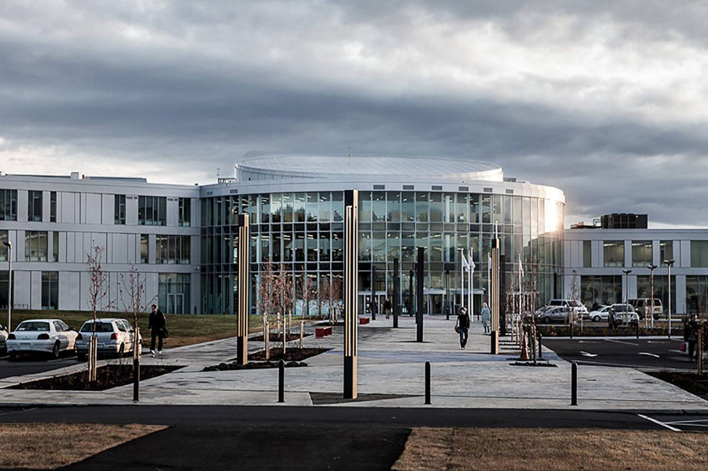

34th International Conference on Automated Reasoning with Analytic Tableaux and Related Methods
TABLEAUX '25
Reykjavik, Iceland, 27 September-3 October 2025
Welcome to TABLEAUX 2025
TABLEAUX is the main
international conference at which research on all
aspects---theoretical foundations, implementation techniques, systems
development and applications---of tableaux-based reasoning and related
methods are presented.
The first TABLEAUX conference was held in Lautenbach near Karlsruhe
in 1992. Since then it has been organized on an annual basis. Since
2021, TABLEAUX, together with CADE and FroCoS, forms part of IJCAR
every two years.

Call for papers
Important dates
Submission of title and abstract: 5 May 2025
Submission of paper: 12 May 2025
Notification: 30 June 2025
Final version: 14 July 2025
Scope
Tableaux and related proof methods offer convenient and flexible tools
for automated reasoning for both classical and non-classical
logics. Areas of application include verification of software and
computer systems, deductive databases, knowledge representation and
its required inference engines, teaching, and system diagnosis.
Topics of interest include but are not limited to:
- tableaux methods for classical and non-classical logics
(including first-order, higher-order, modal, temporal, description,
hybrid, intuitionistic, linear, substructural, fuzzy, relevance and
non-monotonic logics) and their proof-theoretic foundations;
- sequent, natural deduction, labelled, nested and deep calculi for
classical and non-classical logics, as tools for proof search and
proof representation;
- related methods (SMT, model elimination, model checking, connection
methods, resolution, BDDs, translation approaches);
- flexible, easily extendable, light-weight methods for theorem
proving; novel types of calculi for theorem proving and verification
in classical and non-classical logics;
- systems, tools, implementations, empirical evaluations and applications
(provers, proof assistants, logical frameworks, model checkers, etc.);
- implementation techniques (data structures, efficient algorithms,
performance measurement, extensibility, etc.);
- combinations with machine learning and other AI methods;
- techniques for proof generation and compact (or human-readable)
proof representation;
- theoretical and practical aspects of decision procedures;
- applications of automated deduction to mathematics, software
development, verification, deductive and temporal databases, knowledge
representation, ontologies, fault diagnosis or teaching.
We also welcome papers describing applications of tableau
procedures to real-world examples. Such papers should be tailored to
the TABLEAUX community and should focus on the role of reasoning and
on logical aspects of the solution.
Paper submission
The program committee seeks high-quality submissions describing
original work, written in English, not overlapping with published or
simultaneously submitted work to a journal or a conference/workshop
with archival proceedings. Submissions are solicited in two
categories:
- regular papers reporting new theoretical research or
applications, up to 15 pages excluding references,
- short papers such as system descriptions, user experiences, case studies
and domain models, up to 9 pages excluding references.
Papers must be prepared in LaTeX using
the llncs
style and must be submitted electronically as pdf files through
Easychair at
https://easychair.org/conferences/?conf=tableaux2025.
For all accepted papers, one author must attend the conference in
person and present the paper. One author (which may be a different
one, e.g. if the presenter is a student) must pay the full registration
fee.
In exceptional circumstances (which must be agreed about with the
organizers by the registration deadline) online presentation is an
option. Still one author must pay the full registration fee.
Publication
The conference proceedings will be published in
Springer's Lecture
Notes in Artificial Intelligence (LNAI/LNCS) series in Gold Open
Access under
the CC-BY-4.0
license.
Programme committee cochairs
Programme committee
- Carlos Areces, Universidad Nacional de Córdoba
- Davide Bresolin, Università degli Studi di Padova
- Serenella Cerrito, IBISC, Université d'Evry Val d'Essonne
- Anupam Das, University of Birmingham
- Hans de Nivelle, Nazarbayev University
- Valeria de Paiva, Topos Institute
- José Espírito Santo, Universidade de Minho
- Christian Fermüller, Technische Universität Wien
- Rajeev Goré, Monash University
- Andrzej Indrzejcak, University of Lodz
- Tomasz Kowalski, Jagiellonian University
- Graham Leigh, Göteborgs Universitet
- Björn Lellmann, Bundesministerium für Finanzen, Vienna
- Tim S. Lyon, Technische Universität Dresden
- Cláudia Nalon, Universidade de Brasilia
- Sara Negri, Università degli Studi di Genova
- Elaine Pimentel, University College London
- Revantha Ramanayake, Rijksuniversiteit Groningen
- Luca Tranchini, Eberhard-Karls-Universität Tübingen
- Josef Urban, Czech Technical University in Prague
- to be completed
Organizers, sponsors and local information
See the shared pages of the colocated
conferences.
Last update 1 January 2025